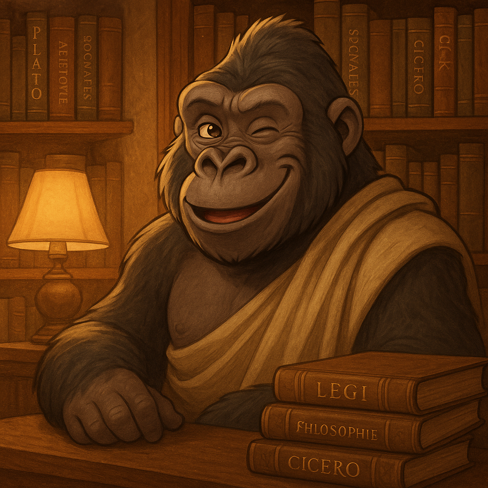

Here's what you need to know.
You are writing an Issues Analysis on the philosophy of the good life. In short, you need to:
You may submit as written work (up to 1500 words), a multimodal piece (up to 10 minutes), or a hybrid.
Due: Friday, Week 6.
What you're actually doing, in detail.
This is an Issues Analysis. You've been building a portfolio all term with weekly entries. Your final submission synthesises this work into a position that answers your chosen question.
You may submit as:
You will also do a short oral defence (2-3 minutes) in class.
Due: Friday, Week 6.
Quick check: What is the maximum word count for a written submission?
Your submission must tick all of these boxes:
You must also use at least two observations from your lived trials as evidence.
Quick check: How many philosophical positions must you explain at minimum?
After submitting your written/multimodal piece, you'll do a 2-3 minute oral defence in class.
This means you need to be able to:
The oral defence is assessed under Reasoning & Argument and Communication.
Quick check: True or false: the oral defence replaces your written submission.
What you're being marked on, and what separates an A from a C.
You are being marked on four criteria:
| Criterion | What It Means | A-Grade Descriptor |
|---|---|---|
| Knowledge & Understanding (KU) | Do you know the philosophical issues and positions? | Consistently clear and perceptive knowledge; insightful explanation of philosophical nature of issues |
| Reasoning & Argument (RA) | Can you build logical arguments and defend your position? | Coherent and convincing formulation and defence of positions taken |
| Critical Analysis (CA) | Can you evaluate strengths and weaknesses of positions? | Discerning critical analysis of strengths and weaknesses |
| Communication (C) | Do you use philosophical language correctly and cite sources? | Accurate, consistent use of philosophical terminology with appropriate acknowledgment |
Quick check: Which criterion focuses on evaluating the strengths and weaknesses of philosophical positions?
A rough structural mock-up to show you what an Issues Analysis could look like.
This is a rough structural example only. Your content, arguments, and voice should be entirely your own.
Title: Can a life be good even when it involves significant suffering or loss?
Introduction (~200 words)
The question of whether a good life can coexist with suffering is a central concern in the philosophy of happiness. Hedonists would argue that suffering is inherently opposed to the good life, as it diminishes pleasure. However, Stoic philosophers like Epictetus and Marcus Aurelius argue that suffering is external to the will, and therefore irrelevant to genuine flourishing. This essay will examine both positions, drawing on Epicurean hedonism and Stoic philosophy, before defending the view that suffering can be compatible with a good life when approached with the right disposition...
Position 1: Hedonism (~350 words)
Explain Epicurean hedonism: static vs moving pleasures, natural/necessary desires. Explain how suffering disrupts ataraxia. Reference Feldman's attitudinal hedonism as a refinement. Critically analyse: can attitudinal hedonism accommodate suffering better than sensory hedonism?
Position 2: Stoicism (~350 words)
Explain Stoic indifference to externals. Reference Epictetus on control, Stockdale's POW experience. Explain how suffering becomes an opportunity for virtue. Critically analyse: is the Stoic view psychologically realistic? What about the father who cannot mourn?
Lived Trial Evidence (~200 words)
Draw on at least two observations from your trials. E.g., "During the Stoic 'last-time' meditation trial, I noticed..." and "My hedonism trial revealed..."
Defence of Own Position (~300 words)
State your view clearly. E.g., "I argue that suffering is not inherently opposed to the good life, but only when..." Defend against the strongest objection to your view. Use philosophical reasoning and trial evidence together.
Conclusion (~100 words)
Restate your position. Acknowledge what remains uncertain. End with a philosophical reflection.
Bibliography
Aristotle, Nicomachean Ethics...
Epictetus, Enchiridion...
Feldman, F. (2004) Pleasure and the Good Life...
etc.
Enter your observations from each weekly trial. This is private — nobody else will see what you enter. It's just so you have everything in one place.
Protocol: 'Savouring' and 'Three Daily Pleasures'
Each day you recorded three pleasures you experienced and practised savouring them mindfully.
Protocol: 'Best Possible Self'
You spent time imagining and writing about your best possible future self, then reflecting on the desires this revealed.
Protocol: 'The Flow Hour'
Each day you chose one hour with no agenda, no screens. You followed your natural inclinations and recorded what happened.
Protocol: Choose three practices from the Stoic Daily Routine Handbook.
You selected three Stoic practices and followed them for 7 days.
Protocol: 'The Moral Exemplar Trial'
You chose a moral exemplar and practised one of their virtues for 7 days, asking "What would my exemplar do?" each day.
Select a theory to explore its key ideas, watch videos, and access required readings.
A good life requires pleasure. The best version (Epicurus) focuses on tranquillity and simple satisfactions rather than intense sensation.
Q1: What does hedonism claim about the good life?
Q2: What is Epicurus's distinction between types of pleasure?
Q3: Why does Nozick's Experience Machine challenge hedonism?
Jeremy Bentham argued that pleasure is purely about sensation. "Prejudice apart, the game of push-pin is of equal value with the arts and sciences of music and poetry." All that matters is the quantity of pleasure — not its source or type.
Epicurus saw that if certain pleasures lead to disaster, they don't maximise pleasure overall. He distinguished:
The goal is ataraxia — tranquillity. As Philodemus summarised: "God is not to be feared, death should cause no anxiety, easily obtained is the good, and easily endured is the bad."
Fred Feldman argued that pleasure is not a sensation but an attitude toward states of affairs. Finding a philosophy paper enlightening is enjoyment, even without sensory pleasure.
Intrinsic Attitudinal Hedonism (IAH): Life value = total intrinsic attitudinal pleasure minus pain.
Feldman gives the example of Stoicus — imagine a man whose only desire is to live a quiet, peaceful life. He sits in his garden, reads, and thinks. He has no intense sensory pleasures, yet he genuinely enjoys his peaceful existence. Sensory hedonism would say his life is bad (no sensory thrills); attitudinal hedonism says it's good (he takes pleasure in his state of affairs).
Refinements (each handles a classic objection):
This is the most sophisticated form of hedonism and can handle many classic objections.
Example of a strong strength/weakness:
Strength: "Hedonism provides a clear, measurable criterion for the good life — pleasure is something we can all recognise, making it a practical standard for evaluating well-being."
Weakness: "Nozick's Experience Machine shows that most people value contact with reality over mere pleasant experience, suggesting pleasure alone is insufficient for a good life."
Notice: each point states the claim AND gives a reason why.
Hedonism strengths to consider:
Hedonism weaknesses to consider:
The classic thought experiment challenging hedonism: if you could plug into a machine that simulates a perfect life of pleasure, would you?
Use for: Arguing against hedonism (CA).
Open Reading (PDF)Feldman defends attitudinal hedonism — pleasure as attitude, not sensation. Introduces DAIAH.
Use for: Defending hedonism against objections (RA, CA).
Open Reading (PDF)We need to want things to have meaningful achievement. To be satisfied is to reach those desires and have a good life.
Q1: What is the core claim of desire-satisfaction theory?
The basic idea: as we develop, we arrange our values into a priority order. What's best for us is whatever maximally conforms to our priorities.
What we want when fully informed of all the facts. This handles some problems (the impulsive desire) but not others (the informed sadist).
MacIntyre argues some activities have internal goods that make them worth pursuing for their own sake. These are complex activities that sustain our interest, raise challenges, and develop our faculties. This bridges desire theory and virtue ethics.
Desire theory strengths:
Desire theory weaknesses:
Parfit’s influential overview of three theories of well-being: hedonism, desire-fulfilment, and objective list theory.
Use for: Comparing theories directly (KU, RA).
Open Reading (PDF)The Savage confronts World Controller Mustapha Mond about a society where everyone’s desires are satisfied by design.
Use for: Critiquing desire-satisfaction theory (CA).
Open Reading (PDF)Spontaneity allows us to avoid drudgery and stagnancy while improvisation allows us to be in the flow state — a good life has constant variation and experiences of flow across many areas.
Q1: What does 'wu wei' literally translate to?
Q2: How does the Confucian approach to wu wei differ from the Daoist approach?
Q3: What are the two principles Zhuangzi draws from his expert examples (Butcher Ding, the swimmer)?
Q4: What does 'de' mean in the context of wu wei?
Q5: Who coined the psychological concept of 'flow'?
Q6: What is the key condition for entering a flow state?
The tension between routine and impulse is a core issue for the good life. Routine reduces cognitive load and manifests competence, but can be soul-deadening. Impulse brings freedom and excitement but can lead to bad decisions.
In Chinese philosophy, wu wei is the ideal of perfectly effortless action. Someone in wu wei has de — a charismatic power. People want to follow them because they act without ulterior motives, appearing honest and trustworthy.
In wu wei, one is in a state of grace: values are harmoniously combined, there is no inner tension, and interpersonally one is in alignment.
Confucian path: Master ritual until it becomes second nature. Confucius said at seventy he could "follow my heart's desires without transgressing propriety." Like learning an instrument — practice until the rules disappear.
Daoist path: Start by foregrounding spontaneity and avoiding plans and rules. Like improvisation in music — responding in the moment with psychological receptivity.
Butcher Ding: Follows the natural structure of the ox so perfectly his knife never dulls. He says: "I follow the Heavenly pattern of the ox, thrusting into the big hollows."
The Swimmer: Goes under with the whirlpool and emerges with the spring. "I follow the way of the water and do not impose myself upon it."
Woodcarver Qing: After seven days of fasting and clearing his mind, he creates masterworks because he has shed all distractions.
Csikszentmihalyi (1990) identified these nine conditions of the flow state:
Flow occurs when challenge and skill are balanced. Too much challenge = anxiety. Too little = boredom.
As your skills improve, you need greater challenges to stay in flow. This drives competence and mastery.
Slingerland agrees there are definite connections, but notes differences:
What matters for both: absorption in service of something bigger than yourself. The flow state leads to competence and mastery, driving us to continually grow.
Strengths to consider:
Weaknesses to consider:
The foundational text on flow states — moments of complete absorption where challenge perfectly matches skill.
Use for: Explaining the psychological basis for spontaneity (KU, RA).
Open Reading (PDF)Slingerland analyses wu wei across Chinese philosophical traditions, exploring the paradox of trying to not-try.
Use for: Understanding the philosophical depth of wu wei (KU, RA).
Open Reading (PDF)It's not about your experience but the sort of person you are. The good life means cultivating virtues — excellences of character — that you know are good.
Q1: What is Aristotle's 'function argument'?
Q2: What is the Doctrine of the Mean?
Q3: According to Aristotle, how does virtue relate to pleasure?
Q4: What is Nussbaum's main response to the relativism objection against virtue ethics?
Q5: What does Nussbaum mean by 'thin' vs 'thick' definitions of virtue?
Q6: According to Nussbaum, what are 'grounding experiences'?
Just as a good knife is one that cuts well (fulfils its function), a good human is one who reasons well. The flourishing life is lived in accordance with reason.
Aristotle asks: "Do the carpenter and the leatherworker have their functions and actions, while a human being has none, and is by nature idle, without any function?" (1097b)
Every virtue sits between two vices — an excess and a deficiency:
| Deficiency | Virtue (Mean) | Excess |
|---|---|---|
| Cowardice | Courage | Rashness |
| Insensibility | Temperance | Intemperance |
| Meanness | Liberality | Prodigality |
The mean is relative to us, not arithmetic. A trained athlete needs more food than a beginner.
Virtues involve having feelings "at the right time, about the right things, towards the right people, for the right end, and in the right way" (1106b). Virtue is not suppressing emotion but educating it.
Quick check: In Aristotle's framework, courage is the mean between which two extremes?
A major criticism of Aristotle is relativism: if virtues are just "what our culture says is good," then torturers can claim to be virtuous within their practice. Nussbaum's response:
Every human being, regardless of culture, faces universal spheres of experience:
The 'thin' definition says a virtue is "whatever it is to choose well in this sphere." Different cultures may give different 'thick' answers, but they're all answering the same question. And some answers are better than others.
Short answer: In your own words, explain how Nussbaum's approach handles the relativism problem.
Strengths to consider:
Weaknesses to consider:
From the Nicomachean Ethics. The function argument, Doctrine of the Mean, and practical wisdom.
Use for: The foundational account of virtue ethics (KU, RA).
Open Reading (PDF)Nussbaum defends Aristotle against cultural relativism using universal “grounding experiences.”
Use for: Defending virtue ethics against relativism (CA, RA).
Open Reading (PDF)The concept of “practices” with internal goods. Bridges desire theory and virtue ethics.
Use for: A modern defence of virtue ethics (KU, RA).
Open Reading (PDF)Human life as narrative. Virtues make sense only within a whole life lived as a quest for the good.
Use for: Arguing the good life requires narrative coherence (RA, CA).
Open Reading (PDF)A good life is one where emotions are mastered so they don't influence behaviour irrationally, leading to well-reasoned decisions and flourishing.
Q1: What is the Stoic 'dichotomy of control'?
Q2: According to the Stoics, what is the relationship between emotions and judgements?
Q3: What are the four Stoic cardinal virtues?
Q4: How does Stoicism differ from Aristotle on external goods?
The Stoics believed we should live 'according to nature.' Nature put some things under our control — our desires, aversions, judgements, and moral purpose. Everything else (health, wealth, reputation, life, death) is part of an ordered universe that merits our acceptance.
Epictetus: "A man's master is he who is able to confer or remove whatever that man seeks or shuns. Whoever then would be free, let him wish nothing, let him decline nothing, which depends on others; else must necessarily become a slave."
Compare Kant: even if a good will achieves nothing, "it would sparkle like a jewel in its own right."
Crucially, Stoics view emotions as acts of will. We are responsible for our happiness and freedom from suffering. By adjusting our concerns (what we care about), we can indirectly control our emotional responses.
This is the founding principle of Cognitive Behavioural Therapy (CBT). Albert Ellis identified three unrealistic expectations that cause suffering:
From 'A Week in the Stoa' and the Stoic Daily Routine:
Quick check: What Stoic practice involves imagining the loss of things you value?
Admiral Stockdale credited Epictetus with helping him survive 7 years as a POW in Vietnam. He recognised human fragility — torture can break your body in minutes — but insisted that what truly matters is inner self-respect: not succumbing to fear and guilt.
Stockdale always made his captors torture him before giving them anything. He lived by a code even in the most desperate circumstances. Later, he wrote: "Bless you prison, for having been part of my life."
Stoics use concentric circles expanding from self → family → community → humanity → all living beings. The goal is to draw the outer circles inward, increasing concern for more people.
Attachment to others: Epictetus describes a father so miserable about his daughter's illness that he runs away. The Stoic response: the natural mode of affection is to care, not to abandon. But can we really remain "indifferent" to our loved ones' suffering?
The cold father: Cicero tells of a father who, told of his child's death, said: "I was already aware that I had begotten a mortal." This seems unnaturally cold.
Mental illness: Stoicism may be unduly optimistic that everyone can regulate emotions equally. In serious cases, deeper problems may resist willpower alone.
Short answer: Do you think Stoicism asks too much of people when it comes to emotional control? Why or why not?
Strengths to consider:
Weaknesses to consider:
Stockdale’s account of applying Stoic philosophy during seven years as a prisoner of war in Vietnam.
Use for: Evidence that Stoicism sustains a good life through suffering (RA).
Open Reading (PDF)The private journal of the Roman Emperor — reflections on mortality, control, and seeing things as they truly are.
Use for: Primary source quotations from a key Stoic philosopher (KU, RA).
Open Reading (PDF)Select your two theories and prepare your approach.
Learning intention: Formulate and defend your own position on the good life (RA), using philosophical reasoning and lived-trial evidence, structured according to SACE Issues Analysis conventions (C).
Success: You have selected two theories, planned your argument structure, identified your own position, and prepared to respond to the strongest objection.
Your Issues Analysis must use at least two philosophical perspectives. Which two will you focus on?
An Issues Analysis is 45% of your school assessment. It is the heart of your Stage 2 Philosophy portfolio. Here's what makes a strong one:
Use these prompts to begin shaping your Issues Analysis.
Use phrases that make your argument structure visible:
| Theory | Key Terms |
|---|---|
| Hedonism | ataraxia, static pleasure, moving pleasure, attitudinal hedonism, sensory hedonism, intrinsic value |
| Desire Theory | informed desire, success theory, objective list, internal goods, akrasia |
| Spontaneity | wu wei, de, flow state, collection, shedding, challenge-skill balance, autotelic |
| Virtue Ethics | eudaimonia, the mean, function argument, phronesis (practical wisdom), grounding experiences, thick/thin definitions |
| Stoicism | dichotomy of control, premeditatio malorum, reappraisal, cardinal virtues, three disciplines, circles of concern |
Prepare for these likely questions:
Good luck! Now go write something brilliant.
Remember: you can print this entire guide at any time using the Print button in the top left corner.